Real-world videos often contain both camera motion and scene motion, which are typically encoded jointly within video representations. This joint encoding raises the possibility that the two sources of motion may interfere with one another, potentially affecting the quality of the learned representations. In this paper, we first investigate whether and to what extent camera motion and scene motion adversely affect the performance of state-of-the-art video foundation models on downstream tasks. To this end, we introduce Freeze, a synthetic benchmark composed of triplets of video clips: one where both objects and camera are moving, the same with fixed camera, and the same with fixed scene. To our knowledge, it is the first benchmark that makes the interference of camera motion and scene motion measurable under controlled conditions. We test four video foundation models on Freeze and find that all of them perform better on every camera and scene task once the other motion is frozen, so the motion interference exists in both directions. Given this observation, our second focus is to explore whether the representations of the frozen versions can be approximated simply, in a post hoc manner. We leverage Freeze to learn two lightweight mappings that take as input video features and bring them closer to the frozen-scene and frozen-camera versions, respectively. The resulting camera representation, CamBit, improves camera understanding and geometric grounding on real videos for nearly every task and backbone. The scene representation, SceneBit, improves the scene tasks of Freeze and those on real videos, and our analysis shows that its effect is highly context-dependent. Overall, Freeze and the post hoc mappings open a new path towards understanding how camera and scene motion interact in video representation learning, and mitigating their interference where it arises.
Freeze is a synthetic benchmark in which one source of motion can be frozen while everything else stays fixed. Every clip comes in three versions with identical content and first frame: full (camera and scene move), camera frozen and scene frozen. Two subsets cover the two kinds of scene motion found in real videos:
Camera motion is labelled with CameraBench's 15 binary primitives. For scene motion, we classify the physics family on Freeze-Object, and on Freeze-Human we ask whether two windows filmed along different trajectories show the same moment.
First frameLast frameTemporal meanPoint tracksMotion energy | |
| Full | 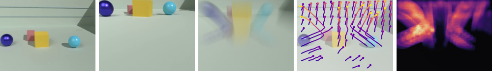 |
| Camera frozen | 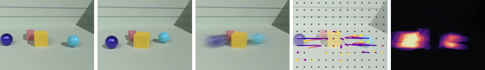 |
| Scene frozen | 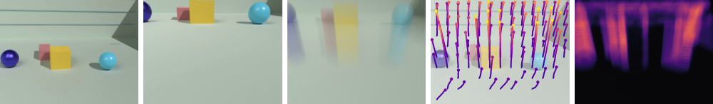 |
First frameLast frameTemporal meanPoint tracksMotion energy | |
| Full | 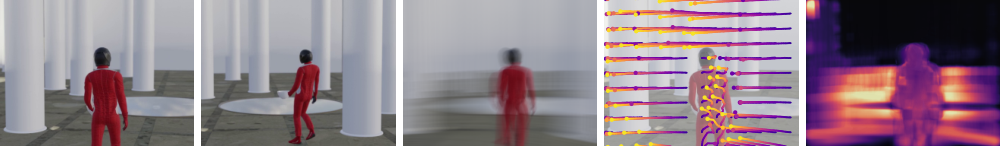 |
| Camera frozen | 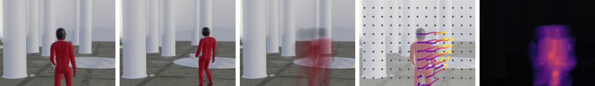 |
| Scene frozen | 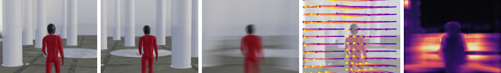 |
Examples of a Freeze-Object clip and a Freeze-Human clip, each in its three versions. In addition to the first and last frames, we present the temporal mean, point tracks and motion energy (mean optical-flow magnitude) to show how the motion differs within a triplet.
Each video shows one clip in its three versions side by side, frame-synchronised: full | camera frozen | scene frozen. Videos play when scrolled into view.
One clip per camera motion; grey text lists other camera motions present in the same clip. In the scene-frozen version all image motion comes from the camera.
Camera-task windows from the camera-by-time grid. Full: camera and person move; camera frozen: one camera; scene frozen: one time step.
Two windows from different camera trajectories of one scene (full version). Positive pairs start at the same time step, negative pairs at different ones.
We evaluate four pre-trained video backbones (V-JEPA 2.1, VideoMAEv2, RVM and WhatMoves), kept fixed, with linear probes. For each task, one probe is trained on the full clips and another on their frozen versions. Every backbone does better on every task once the other motion is frozen: the interference between camera and scene motion is not only intuitive but measurable, and it occurs in both directions.
| Backbone | Camera, Object (mAP) | Camera, Human (mAP) | Physics family, Object (acc.) | Same moment, Human (AUC) | ||||||||
|---|---|---|---|---|---|---|---|---|---|---|---|---|
| full | scene frozen | Δ | full | scene frozen | Δ | full | camera frozen | Δ | full | camera frozen | Δ | |
| V-JEPA 2.1 | 71.1 | 76.6 | +5.5 | 83.0 | 86.1 | +3.1 | 69.4 | 88.2 | +18.8 | 53.1 | 67.4 | +14.3 |
| VideoMAEv2 | 42.6 | 46.3 | +3.7 | 48.9 | 57.1 | +8.3 | 88.0 | 92.8 | +4.8 | 65.6 | 74.2 | +8.6 |
| RVM | 66.5 | 76.6 | +10.1 | 94.3 | 95.2 | +0.9 | 74.0 | 86.0 | +12.0 | 55.3 | 66.6 | +11.3 |
| WhatMoves | 76.1 | 88.2 | +12.1 | 91.4 | 94.6 | +3.2 | 83.0 | 91.0 | +8.0 | 70.8 | 89.4 | +18.7 |
For all four backbones, probes score higher on every task when the other motion is frozen. All scores are in %. Δ is the frozen score minus the full score in points.
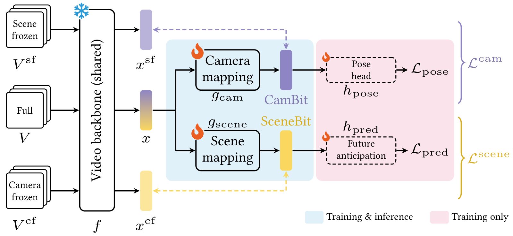
Overview of the model that extracts CamBit and SceneBit from the features of a given backbone. To train, we use triplets of nearly-identical videos, where either both scene and camera move (“Full”), only the camera moves (“Scene frozen”) or only the scene moves (“Camera frozen”). Two small networks map the original features to each of the two other features in the triplet; auxiliary tasks (pose head and future anticipation) constrain the optimization on real-world videos.
Video representations capture each kind of motion better once the other is frozen. We therefore learn to map the features of the full clip towards those of a frozen version, and apply the mapping post hoc to real videos without re-training the backbone. Both mappings act on the backbone features x (8 temporal steps), share one small Transformer architecture with a residual form, and return features of the same shape, so they can be used wherever x is.
CamBit = x − w(x) is trained to bring x closer to the features of its scene-frozen version on Freeze, and to leave a clip unchanged when its scene is already frozen. To close the domain gap, it is also supervised with the camera motion of real clips (Condensed Movies, with poses estimated by VGGT-Ω) and BEDLAM2: a pose head predicts the direction and speed of the camera motion between consecutive steps.
SceneBit = x − u(x) is trained towards the camera-frozen version. On real videos, it learns from augmented pairs: a real camera path replayed as a moving crop on clips filmed with a still camera, paired with a fixed crop. A contrastive invariance term pulls the two versions of a clip together, and a recurrent head that predicts the next step of the original features keeps the scene motion from being discarded along with the camera motion.
For each of the four backbones, we compare the original features with CamBit and SceneBit using the same linear probes, on real videos and on held-out Freeze scenes, averaged over three training seeds.
CamBit improves camera understanding (CameraBench, ACaM, held-out Freeze) and geometric grounding (relative pose on DL3DV, EMDB and TUM RGB-D) on nearly every task and backbone, sometimes by close to 20 points. The camera information is implicit in the features and can be extracted post hoc, without re-training the foundation model.
| Camera understanding ↑ | Geometric grounding ↓ | |||||||
|---|---|---|---|---|---|---|---|---|
| CameraBench | ACaM | Freeze-O. | Freeze-H. | DL3DV | EMDB | TUM RGB-D | ||
| mAP | Retrieval | Acc. | mAP | mAP | zMSE | zMSE | zMSE | |
| V-JEPA 2.1 | 70.4 | 31.0 | 74.1 | 53.8 | 74.8 | .721 | .503 | .879 |
| + CamBit | 84.0+13.6 | 41.5+10.5 | 81.8+7.7 | 60.3+6.5 | 93.8+19.0 | .643−.078 | .200−.303 | .421−.458 |
| WhatMoves | 70.8 | 32.9 | 73.2 | 60.1 | 92.2 | .595 | .335 | .420 |
| + CamBit | 81.3+10.5 | 41.2+8.3 | 77.9+4.7 | 66.1+6.0 | 92.6+0.4 | .586−.009 | .249−.086 | .345−.075 |
| VideoMAEv2 | 50.7 | 20.9 | 61.9 | 29.1 | 40.0 | .884 | .778 | 1.026 |
| + CamBit | 70.4+19.7 | 39.3+18.4 | 71.2+9.3 | 44.6+15.5 | 80.7+40.7 | .771−.113 | .445−.333 | .794−.232 |
| RVM | 70.4 | 29.9 | 69.7 | 50.4 | 87.3 | .704 | .405 | .700 |
| + CamBit | 82.2+11.8 | 41.5+11.6 | 79.2+9.5 | 64.6+14.2 | 94.1+6.8 | .656−.048 | .303−.102 | .453−.247 |
Camera results. Each blue CamBit row reads CamBit computed from the backbone features of the row above, with the same probe. Freeze-O. and Freeze-H.: the held-out scenes of Freeze-Object and Freeze-Human. Understanding scores are in %, and zMSE is the mean squared error of the standardized pose (lower is better). Retrieval: CameraBench's skill-based retrieval (group score). Green numbers give the change from the backbone row, and the better value of each pair is in bold.
On the held-out Freeze scenes, SceneBit improves physics-family accuracy on all four backbones and same-moment AUC on three of them. On real videos (Diving48, SSv2, and the egocentric EPIC-KITCHENS and Ego-Exo4D, where the head-mounted camera moves more), the effects are more nuanced and the gains are overall moderate, which motivates the analysis below.
| Freeze-O. | Freeze-H. | Diving48 | SSv2 | EPIC-K. | Ego-Exo4D | |||
|---|---|---|---|---|---|---|---|---|
| Acc. | AUC | Acc. | Acc. | Acc. (All) | Acc. (High) | Acc. (All) | Acc. (High) | |
| V-JEPA 2.1 | 23.4 | 51.6 | 25.7 | 39.8 | 33.8 | 24.5 | 16.4 | 12.2 |
| + SceneBit | 35.3+11.9 | 52.7+1.1 | 26.0+0.3 | 39.9+0.1 | 34.7+0.9 | 25.5+1.0 | 17.0+0.6 | 12.5+0.3 |
| WhatMoves | 31.3 | 61.6 | 22.0 | 24.4 | 24.8 | 18.4 | 11.3 | 8.3 |
| + SceneBit | 51.7+20.4 | 70.1+8.5 | 22.3+0.3 | 24.5+0.1 | 25.3+0.5 | 18.9+0.5 | 11.8+0.5 | 8.7+0.4 |
| VideoMAEv2 | 51.7 | 57.9 | 27.2 | 30.6 | 30.3 | 22.4 | 20.1 | 16.7 |
| + SceneBit | 57.7+6.0 | 57.6−0.3 | 27.3+0.1 | 30.6+0.0 | 30.3+0.0 | 23.0+0.6 | 20.0−0.1 | 16.7+0.0 |
| RVM | 18.9 | 53.4 | 20.1 | 36.8 | 29.9 | 20.5 | 13.4 | 10.1 |
| + SceneBit | 30.8+11.9 | 55.3+1.9 | 21.2+1.1 | 36.9+0.1 | 30.2+0.3 | 21.5+1.0 | 14.3+0.9 | 11.8+1.7 |
Scene results. Each blue SceneBit row reads SceneBit computed from the backbone features of the row above, with the same probe. Freeze-O. and Freeze-H.: physics-family accuracy and same-moment AUC on the held-out scenes. EPIC-K. (EPIC-KITCHENS) and Ego-Exo4D: class-balanced accuracy on all validation clips (All) and on those with much head motion (High). All scores are in % (higher is better). Green and red numbers give the increase and decrease from the backbone, and the better value of each pair is in bold.
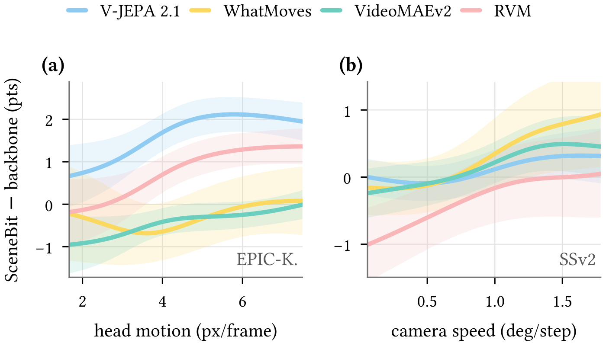
SceneBit is more effective in clips with higher camera speed. (a) EPIC-KITCHENS, measured head motion. (b) SSv2, camera speed estimated with VGGT-Ω. The bands show ±1 standard error of the smoothed gain. Clips with a nearly still camera contain little camera motion that interferes with the scene, so the mapping can add little; the gain grows with camera speed, consistently across backbones.
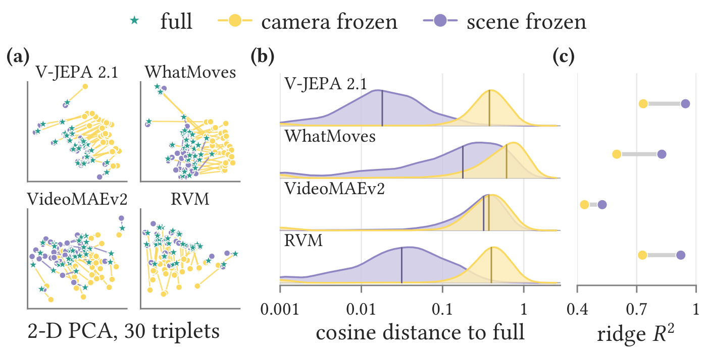
The full clip is closer to its scene-frozen version than to its camera-frozen version in feature space (Freeze-Human). (a) 2-D PCA of 30 random triplets per backbone, with each full clip joined to its two frozen versions. (b) Cosine distance to the full clip over all test triplets (log scale, vertical lines: medians). (c) R2 of a ridge map from the full clip. The camera-frozen version is farther from the full clip and harder to predict, so mapping towards it is harder: the visual impact of moving the camera is simply larger than that of moving an object.
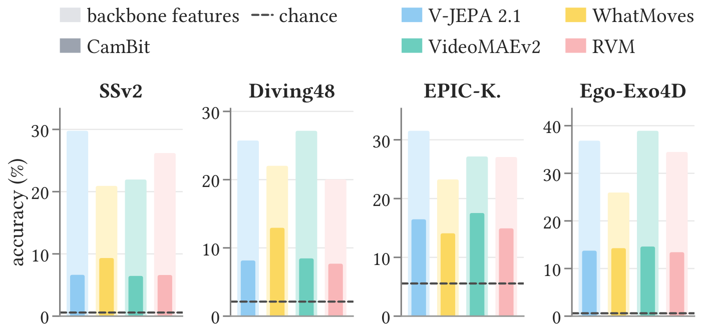
Action recognition from CamBit alone, compared with the backbone features, on four real datasets. On every dataset and backbone, CamBit alone recognizes actions far above chance: camera motion itself carries information about the action, so a representation with less camera information can also lose part of what these tasks rely on.
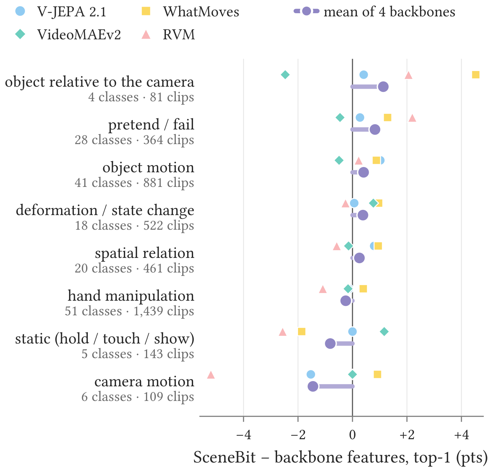
SSv2 classes grouped by what their labels describe. On average across backbones, accuracy improves for classes where an object moves relative to the camera, and drops the most for classes defined by camera motion, showing that SceneBit indeed moves away from camera information. Linear probes are trained on 6,005 class-stratified training clips and evaluated on 4,000 randomly sampled validation clips.
@inproceedings{zhou_freeze,
title = {Camera and Scene Motion Interfere with Each Other in Video Representations},
author = {Zhou, Ziqi and Sevilla-Lara, Laura},
booktitle = {TBD},
year = {TBD}
}